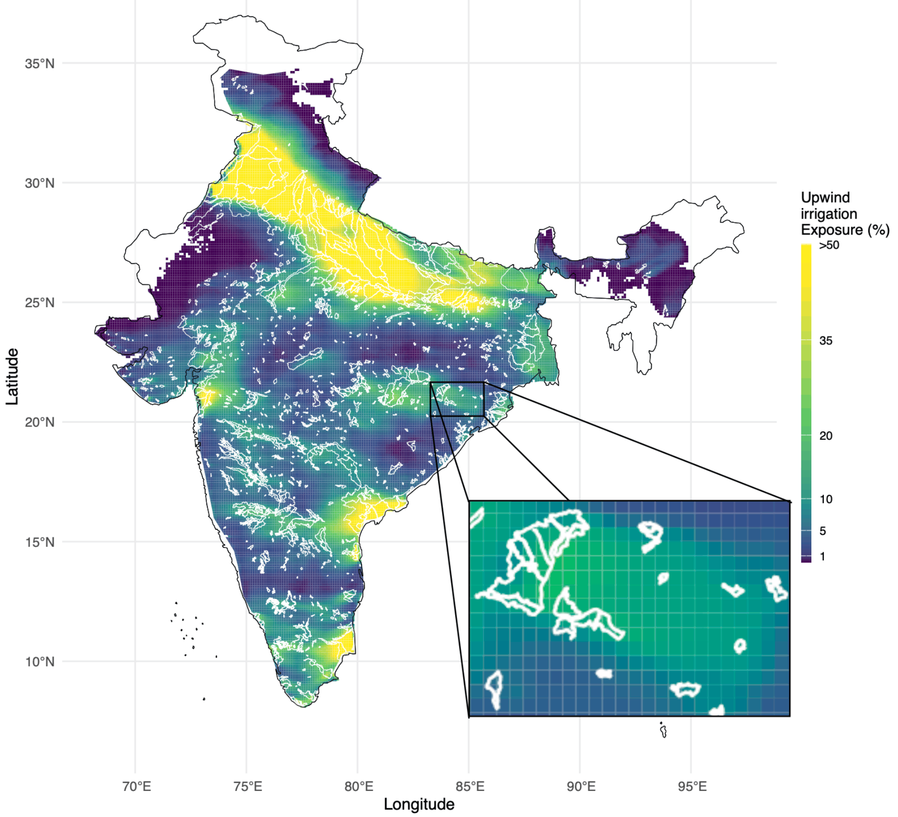

Irrigation Makes It Rain? Climate Spillovers and Adaptation in India
Job Market Paper (draft available soon)
Can economic development change the climate and reshape its own trajectory? I study how large-scale irrigation infrastructure reshapes weather patterns and agricultural development in India. Combining five decades of administrative, climatic, and agricultural data, I exploit wind direction 